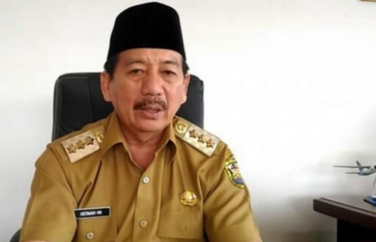

Walikota Bandar Lampung Perpanjang Libur Sekolah Hingga 12 April 2020
Upaya mencegah penyebaran virus Corona, Walikota Bandar Lampung Drs. H. Herman HN memutuskan untuk memperpanjang waktu libur sekolah dari PAUD sampai SMP di Bandar Lampung hingga 12 April 2020, terkecuali bagi yang sedang melaksanakan Ujian Nasional.
“Kita perpanjang libur anak sekolah dari PAUD sampai jenjang SMP hingga 12 April, terkecuali untuk siswa yang tengah menjalani Ujian Nasional”, ungkap Herman HN (23/3).
Selain meliburkan sekolah, Walikota Bandar Lampung juga menyampaikan himbauan kepada masyarakat untuk tidak mengikuti dan melaksanakan acara yang bersifat mengumpulkan orang banyak.
